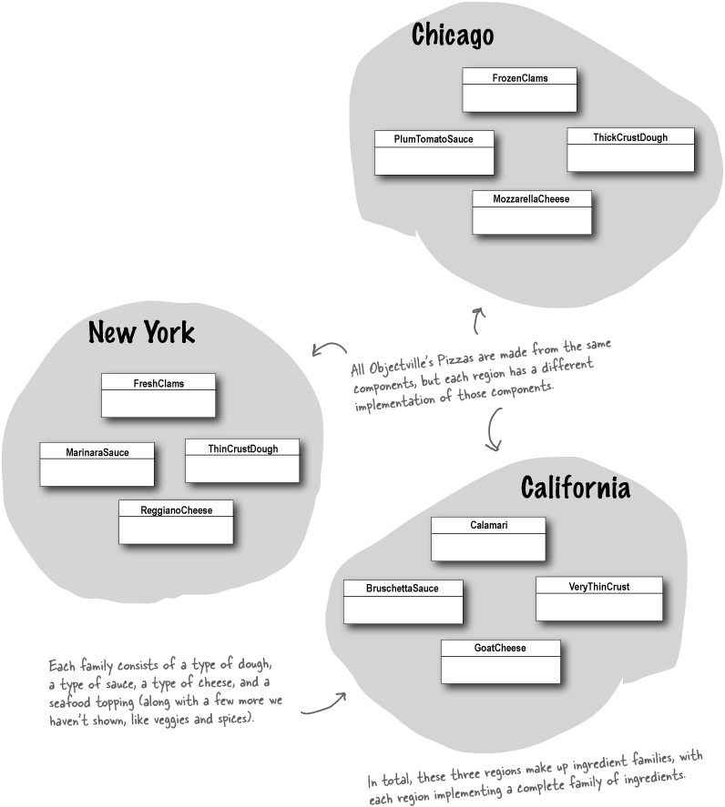

Why we need Abstract Factory?
Factory Method can solve our issues, so why we need Abstract Factory? Let's take a look at our PizzaStore again. Now we need to add a variety of ingredients.

Now we’re going to build a factory to create our ingredients; the factory will be responsible for creating each ingredient in the ingredient family.
/**
* Different region has its own taste, so we create a Ingredient interface.
*/
public interface PizzaIngredientFactory {
Dough createDough();
Sause createSause();
Cheese createCheese();
}
/**
* Create new NYPizzaIntegredientFactory.
*/
public class NYPizzaIntegredientFactory implements PizzaIngredientFactory {
@Override
public Dough createDough() {
return new ThinCrustDough();
}
@Override
public Sause createSause() {
return new MarinaraSause();
}
@Override
public Cheese createCheese() {
return new ReggianoCheese();
}
}
Rework the Pizza class.
/**
* Make prepare to abstract.
*/
public abstract class Pizza {
Dough dough;
Sause sause;
Cheese cheese;
public abstract void prepare();
public void bake() {}
public void cut() {}
public void box() {}
}
/**
* Then we got the CheesePizza.
*/
public class CheesePizza extends Pizza {
PizzaIngredientFactory ingredientFactory;
public CheesePizza(PizzaIngredientFactory ingredientFactory) {
this.ingredientFactory = ingredientFactory;
}
@Override
public void prepare() {
Print.print("CheesePizza prepare");
dough = ingredientFactory.createDough();
sause = ingredientFactory.createSause();
cheese = ingredientFactory.createCheese();
}
}
Revisiting our pizza stores.
/**
* NYStylePizzaStore will create NYStyleCheesePizza, so we need NYPizzaIntegredientFactory.
*/
public class NYStylePizzaStore extends PizzaStore{
@Override
Pizza createPizza(String type) {
Pizza pizza = null;
PizzaIngredientFactory ingredientFactory = new NYPizzaIntegredientFactory();
if (type.equals("cheese")) {
pizza = new CheesePizza(ingredientFactory);
} else if (type.equals("pepperoni")) {
pizza = new NYPepperoniPizza();
} else if (type.equals("clam")) {
pizza = new NYClamPizza();
} else if (type.equals("veggie")) {
pizza = new NYVeggiePizza();
}
return pizza;
}
}